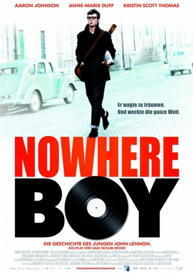
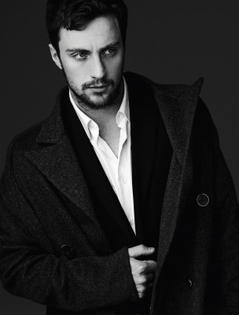
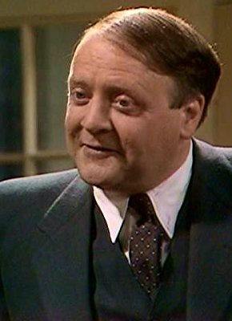

#2634 Nowhere Boy
 
 IMDB-Wertung: 7.1 / 10
IMDB-Wertung: 7.1 / 10  Metascore: 67
Metascore: 67 
Liverpool in den Fünfzigern: John Lennon (A. Johnson), 15 Jahre alt und von der Schule genervt, fällt zu Hause bei seiner strengen Tante Mimi (K. Scott Thomas) die Decke auf den Kopf. Eines Tages trifft John jedoch seine Mutter Julia (A.-M. Duff) wieder, die den Fünfjährigen damals überstürzt verlassen hatte.\r Die lebenslustige, musikbegeisterte Frau führt John in die aufregende neue Welt des Rock'n'Roll ein und bringt ihm das Banjospielen bei - nicht ahnend, dass sie damit den Grundstein für Lennons späteren Lebensweg legt. John gründet eine Band und lernt über Freunde den talentierten Gitarristen Paul McCartney (T. Brodie-Sangster) kennen.\r Doch der Spagat zwischen seinen musikalischen Ambitionen und den zwei starken Frauen in seinem Leben wird für Lennon zur Zerreißprobe ...
Jahr: 2009
Dauer: 98 Minuten
FSK:
Land: England Studio: Senator FilmTonspuren: DTS - ,
Untertitel: Deutsch,
Auflösung: 1080p (1920x816) Größe: 5365 MB
Genre: Drama, Musik, Biographie
Regisseur: Sam Taylor-Johnson
Drehbuch: Julia Baird, Matt Greenhalgh
Soundtrack: Alison Goldfrapp, Will Gregory
Darsteller:
-  Aaron Taylor-Johnson als John
 Kristin Scott Thomas als Mimi
Kristin Scott Thomas als Mimi David Threlfall als Uncle George
David Threlfall als Uncle George- Josh Bolt als Pete Shotton
 Ophelia Lovibond als Marie
Ophelia Lovibond als Marie- Kerrie Hayes als Marie's Friend
 Paul Ritter als Popjoy
Paul Ritter als Popjoy Anne-Marie Duff als Julia
Anne-Marie Duff als Julia- Angelica Jopling als Julia - Aged 8
 David Morrissey als Bobby
David Morrissey als Bobby- Ben Smith als Boy with Knife
- Jack McElhone als Eric
 Thomas Brodie-Sangster als Paul
Thomas Brodie-Sangster als Paul- Lizzie Hopley als Café Waitress
- Dan Armour als Percy Phillips
 Neil Broome als Golfer , uncredited
Neil Broome als Golfer , uncredited- Les Loveday als Teddy in Gang , uncredited
- Cathleen O'Malley als Girl at the Fair , uncredited
- Adele Heather Taylor als Party guest , uncredited
- Angela Walsh als Schoolmistress
-  Richard Syms als Reverend
- James Johnson als Stan
- Alex Ambrose als Young John
- Abby Greenhalgh als Jackie, aged 6
- Richard Tate als Teacher
- Chris Coghill als Cunard Yank
- Andrew Buchan als Fishwick
- Baillie Walsh als Postman
- Simon Lowe als Guitar Shop Guy
- Frazer Bird als Len
- James Jack Bentham als Rod
- Daniel Ross als Nigel
- Sam Wilmott als Colin Hanton
- John Collins als Ivan
- Sam Bell als George
- Colin Tierney als Alf
- Nigel Travis als Cavern Bouncer
- Charlotte Amelia Miles als Girl at Fair , uncredited
- Sarah Molkenthin als Teen , uncredited
- Abbie Murison als Diane , uncredited
- John Patten als Bouncer , uncredited
Datei: X:\2009(N-Z)\Nowhere Boy (2009, FSK, 1920x816).mkv seit 27.11.2015
Festplatte: HD 2009(G-Z)-2010(A-F)
 Es gibt insgesamt 99 Filme in der Gruppe '2009(N-Z)'
Es gibt insgesamt 99 Filme in der Gruppe '2009(N-Z)'